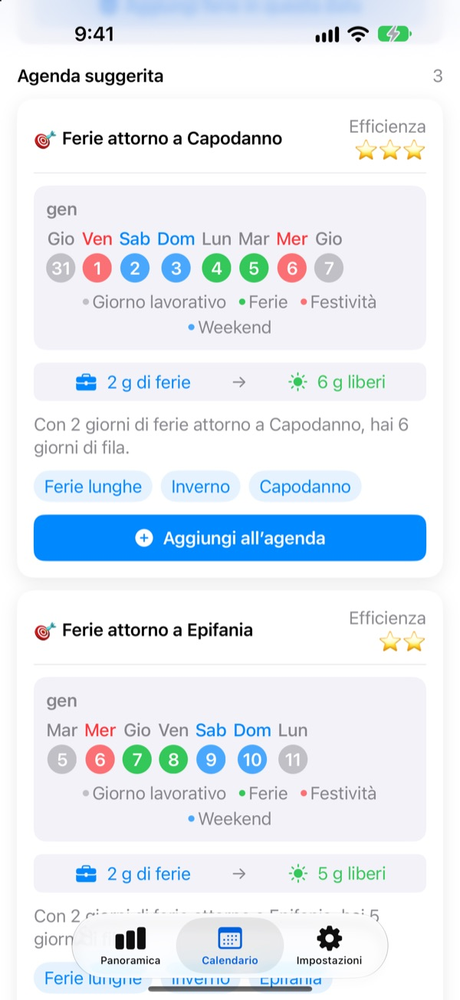
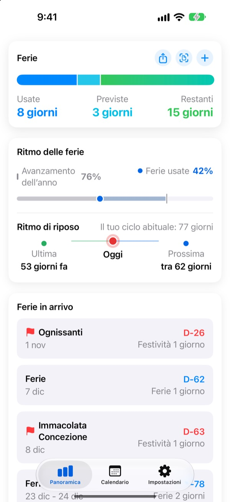
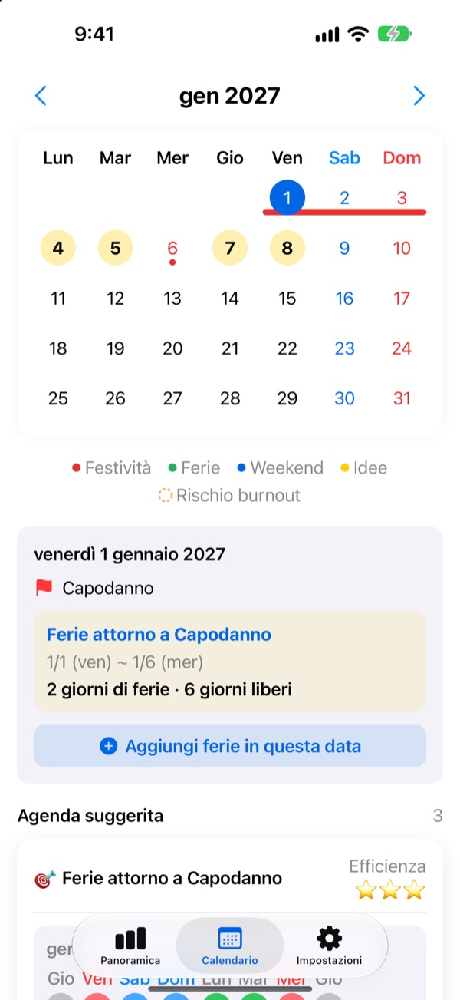
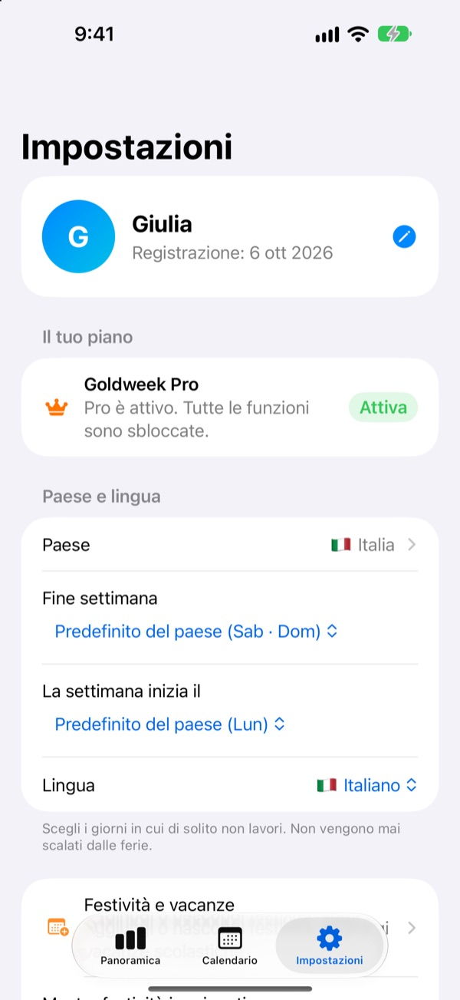

Pochi giorni di ferie,
ponti lunghi
Goldweek abbina festività e weekend e ti mostra esattamente quali giorni chiedere per la pausa più lunga. Basta sfogliare il calendario contando sulle dita.
Download gratuito. Conteggio ferie e suggerimenti restano gratis.

Fin dove arrivano le tue ferie?
Scegli quanti giorni puoi prendere. Vedrai le pause più lunghe che ottieni intorno alle prossime festività.
Stanco di contare i giorni sul calendario?
Il giovedì è festivo: prendi il venerdì? O tieni il giorno per il ponte del mese prossimo? A furia di sfogliare finisci per prendere un giorno qualsiasi, e a dicembre le ferie avanzate vanno perse. Goldweek fa i conti e ti mostra i giorni che allungano di più le tue ferie.
Le tue ferie a colpo d’occhio
Totali, usate e rimaste in una sola schermata. Vedi anche quanto dell’anno è passato accanto a quante ferie hai usato, così capisci subito se ne stai risparmiando troppe.
I giorni rimasti e le prossime ferie compaiono in un widget nella schermata Home.

Segna le ferie dal calendario
Festività, ferie e ponti suggeriti compaiono nel calendario con il loro colore. Tocca una data per aggiungere o modificare un giorno di ferie, anche mezze giornate, quarti di giornata o ore.
Puoi anche importare in un colpo le ferie passate da una foto della schermata delle risorse umane.

Il tuo paese, il tuo orario
Festività di 42 paesi, dall’Italia al resto d’Europa, fino ad Asia e Americhe. Dove cambiano per regione, scegli la tua. Il tuo paese manca? Aggiungi le tue festività.
Puoi impostare anche i giorni del weekend, il primo giorno della settimana e l’orario: fisso, part-time o su turni.

Si parte in tre passi
- 1
Dicci dove lavori
Al primo avvio scegli il paese e quanti giorni di ferie hai all’anno.
- 2
Scegli un suggerimento
Nella scheda Calendario trovi i ponti suggeriti. Aggiungi quelli che ti piacciono.
- 3
Registra le ferie
Tocca una data o importa le ferie passate da una foto.
Come si conta
- Giornata intera
- 1 giorno dal saldo
- Mezza giornata
- 0,5 giorni
- Quarto di giornata
- 0,25 giorni
- Ore
- In base alle ore di lavoro di quel giorno
- Malattia, permessi, trasferte
- Non scalati dal saldo
- Ferie bonus
- Giorni in più come i recuperi, gestiti a parte con data di scadenza (Pro)
Puoi cambiare in qualsiasi momento il totale annuo di ferie e il mese di inizio del tuo anno di ferie nelle Impostazioni.
Riposare bene è gratis. Pianificare, con Plus e Pro.
Gratis
- Giornate, mezze giornate, quarti e ore, con il saldo rimasto
- Festività di 42 paesi, festività tue e vacanze scolastiche
- Tutti i suggerimenti dell’anno, fino a 3 aggiunti
- Consigli sulle pause, promemoria e widget
- Aggiungi ferie da una foto
- Backup su iCloud e calendario condiviso in famiglia
Plus e Pro
- Plus: Pianificatore annuale ottimale
- Plus: Suggerimenti illimitati, anche dell’anno scorso e del prossimo
- Plus: Invia le ferie all’app Calendario
- Pro: Tutto Plus, ferie bonus, limiti annui e riporto per tipo
- Pro: Importa il calendario scolastico e rilevamento automatico del calendario
- Pro: Riposo in famiglia e anniversari di famiglia
Ogni livello è disponibile come abbonamento annuale o acquisto unico a vita.
Gli abbonamenti annuali si rinnovano automaticamente se non li disdici almeno 24 ore prima della scadenza. Gestiscili quando vuoi in Impostazioni > Account Apple > Abbonamenti.
Domande frequenti
Il saldo delle ferie non torna.
Controlla nelle Impostazioni il mese di inizio del tuo anno di ferie e il totale annuo. Mezze giornate (0,5) e quarti di giornata (0,25) vengono scalati da soli, e i tipi che non contano, come malattia, permessi o trasferte, non cambiano il saldo. Se ancora non torna, scrivici.
Le ferie non compaiono nel calendario.
Le ferie annullate non vengono mostrate nel calendario. Controlla lo stato della voce in Gestione ferie. Anche aggiornare all’ultima versione può aiutare.
Come aggiungo ferie bonus?
Tocca + nella scheda Panoramica per aprire Gestione ferie e usa la sezione Ferie bonus in fondo. Scegli un tipo (recupero, premio, ferie di ricarica…), il numero di giorni e, se vuoi, una data di scadenza. Le ferie bonus sono gestite a parte rispetto alle ferie normali.
Ho pagato, ma non si è sbloccato nulla.
Tocca Ripristina acquisto in fondo alla scheda Impostazioni. L’acquisto viene ripristinato con l’account Apple con cui hai effettuato l’accesso all’App Store. Se non funziona, scrivici.
Perdo i dati se elimino l’app?
I dati sono salvati sul dispositivo, quindi eliminando l’app spariscono. Attiva il backup su iCloud per avere una copia da ripristinare.
Posso aggiungere festività mie o nasconderne alcune?
Sì. In Festività e vacanze, nelle Impostazioni, puoi aggiungere le tue festività o nascondere quelle predefinite.
Quali paesi sono supportati?
Goldweek conosce le festività di 42 paesi. Scegli il paese nelle Impostazioni (e la regione, dove le festività cambiano) e il calendario si aggiorna subito. Se il tuo manca, aggiungi le festività a mano o chiedicelo con il feedback dall’app.
Dove vengono salvati i miei dati?
Quello che inserisci resta sul tuo dispositivo o nel tuo iCloud. Riceviamo solo statistiche d’uso anonime, rapporti sugli arresti anonimi e i feedback che decidi di inviarci.
Per tutto quello che non trovi qui sopra, idee o bug, scrivi a leeo@kakao.com. Di solito rispondiamo entro uno o due giorni lavorativi.